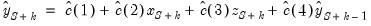

|
|
|
and click on the Forecast button and fill out the series names in the dialog as above. There is some question, however, as to how we should evaluate the lagged value of Y that appears on the right-hand side of the equation. There are two possibilities: dynamic forecasting and static forecasting.

 is the first observation in the forecast sample, EViews will compute:
is the first observation in the forecast sample, EViews will compute: is the value of the lagged endogenous variable in the period prior to the start of the forecast sample. This is the one-step ahead forecast.
is the value of the lagged endogenous variable in the period prior to the start of the forecast sample. This is the one-step ahead forecast. ) uses the actual values for all three lags, , , and
) uses the actual values for all three lags, , , and  .
. and,
and,  and the forecasted value
and the forecasted value  of the first lag of .
of the first lag of . and for the first and second lags of .
and for the first and second lags of . , but more generally, any lags of
, but more generally, any lags of  ). If necessary, the forecast sample will be adjusted.
). If necessary, the forecast sample will be adjusted.